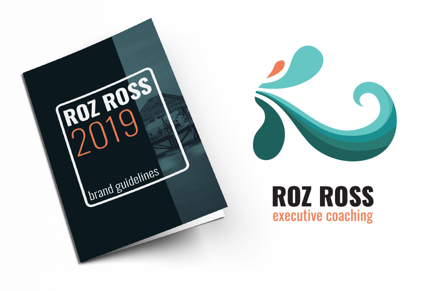
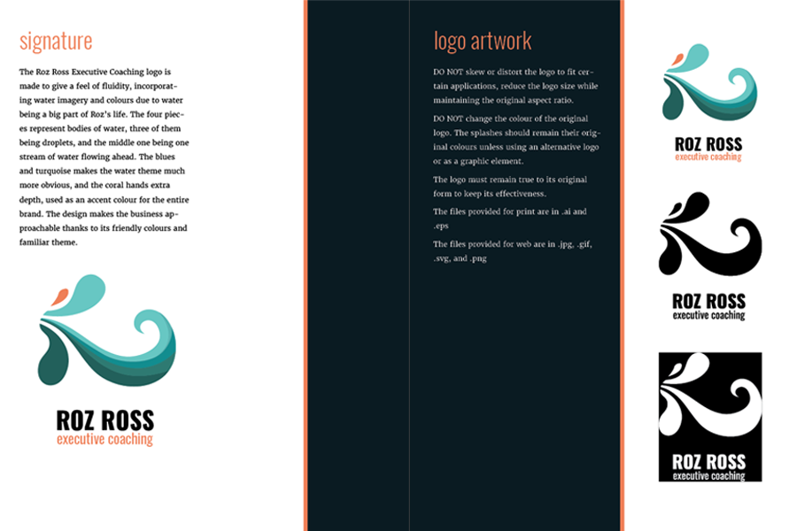
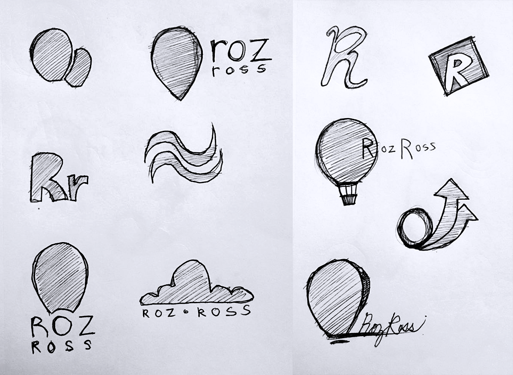

Contact me
Click here to send me an email.
In a team, we were asked by Roslynn Ross, an Ottawa-based executive coach, to create a brand from the ground up, creating the business’ logo, its website, and a full brand guideline. I worked on designing the logo and creating the brand, from its colours to the typeface and everything in-between. A research plan was made to make sure we were going in the right direction, along with a project brief which led us to pitch our idea and bring the vision into fruition.
This is a taste of the branding guide layout that I designed, showcasing the logo's varying colours along with its signature.
These were the sketches for Roz Ross logo. We all made an effort to communicate her personality and her passions, going through dozens of logos and variations until we settled on one.
Click here to send me an email.